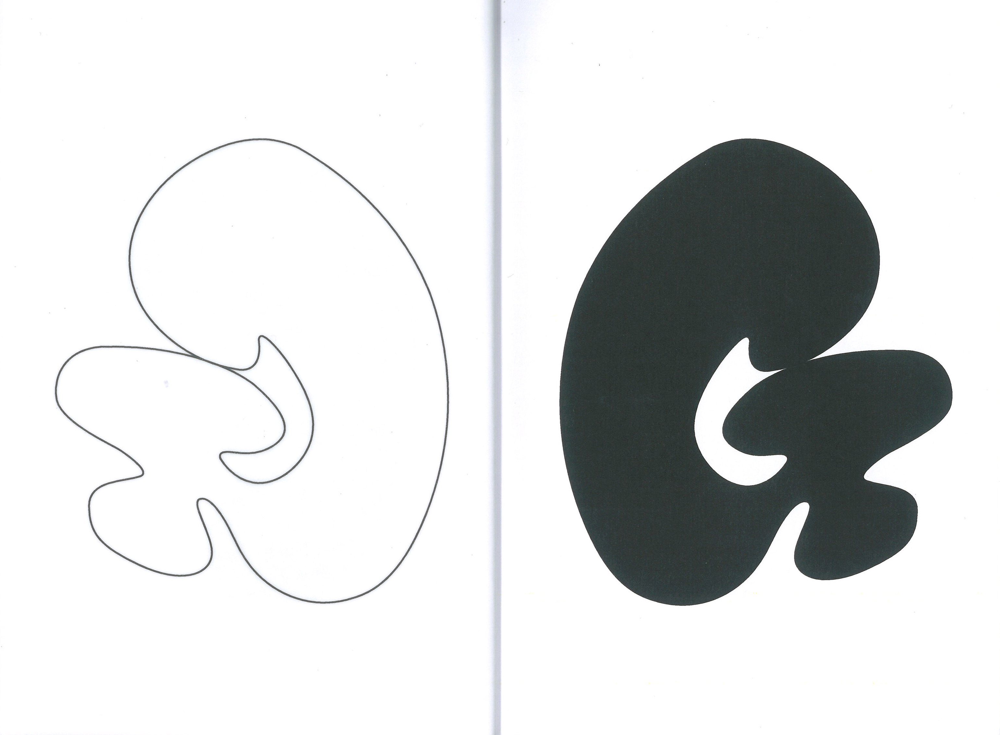
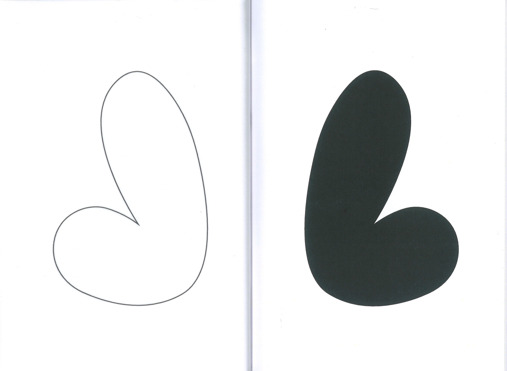
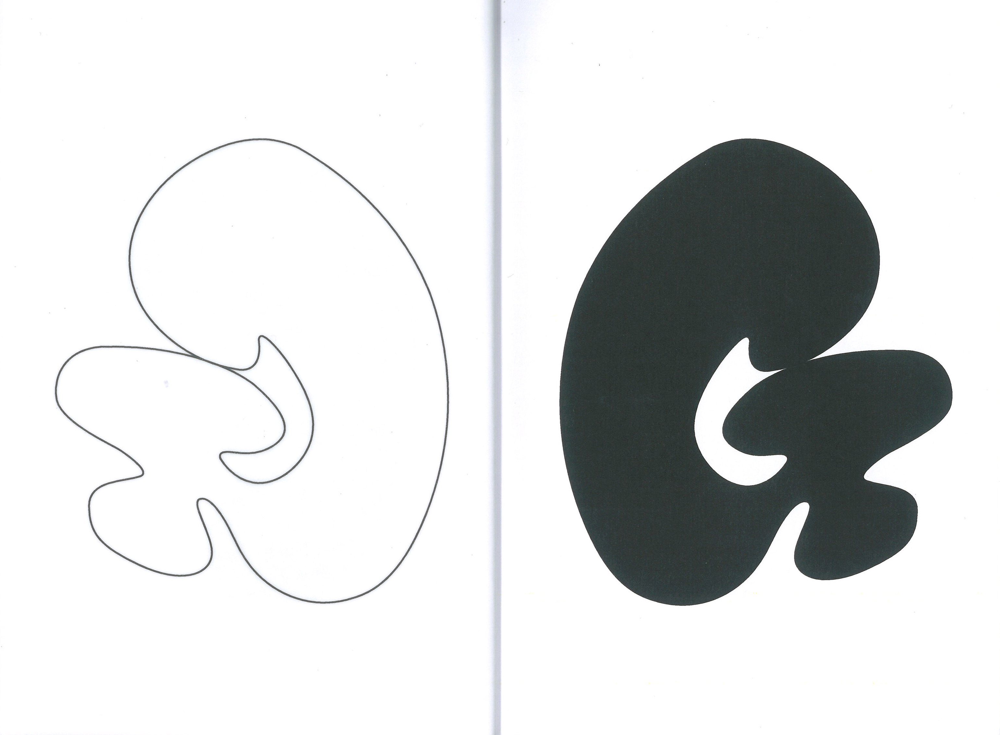
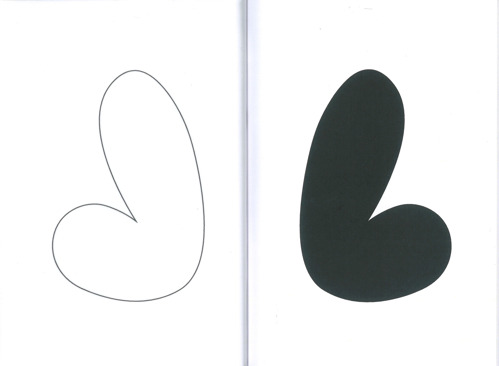

Réalisation d’une édition au format 120 cm x 160 cm avec du papier 120 g et du calque 65 g.
À partir d’une police que l'on apprécie, il a été question de trouver des adjectifs et des termes
pour la définir, puis de réaliser un spécimen de typographie en lien avec ces termes. L'alphabet
complet et les quatre premiers chiffres ont également été inclus.
 


